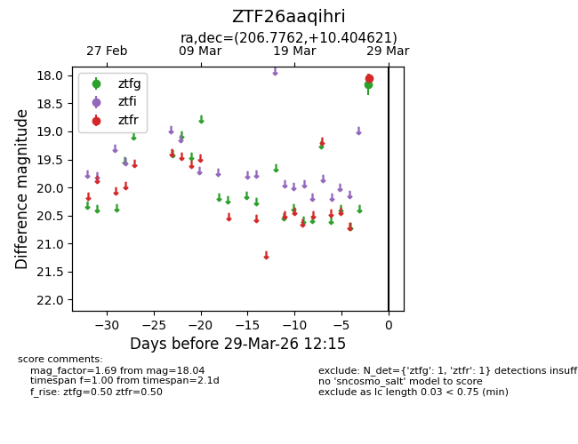
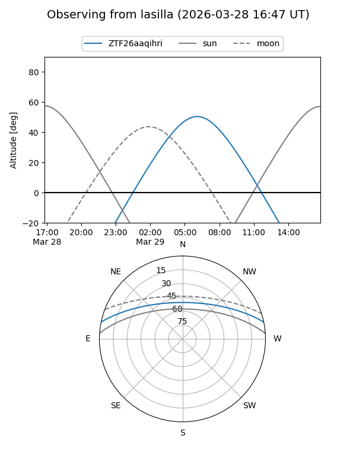
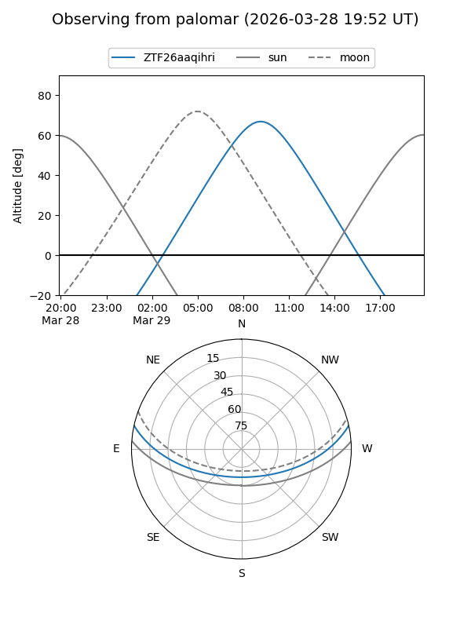

ZTF26aaqihri
Target ZTF26aaqihri at 2026-03-29 12:18
Aliases and brokers:
FINK: link
Lasair: link
ALeRCE: link
alt names
ZTF26aaqihri (ztf,fink_ztf)
Coordinates:
equatorial (ra, dec) = 206.7762,+10.40462
equatorial (HMS+DMS) = 13:47:06.30,+10:24:16.63
galactic (l, b) = (343.6765,+68.75016)
Flags:
Photometry:
last ztfg=18.16, ztfr=18.04
1 ztfg, 1 ztfr detections
Lightcurve

Visibility


Additional plots